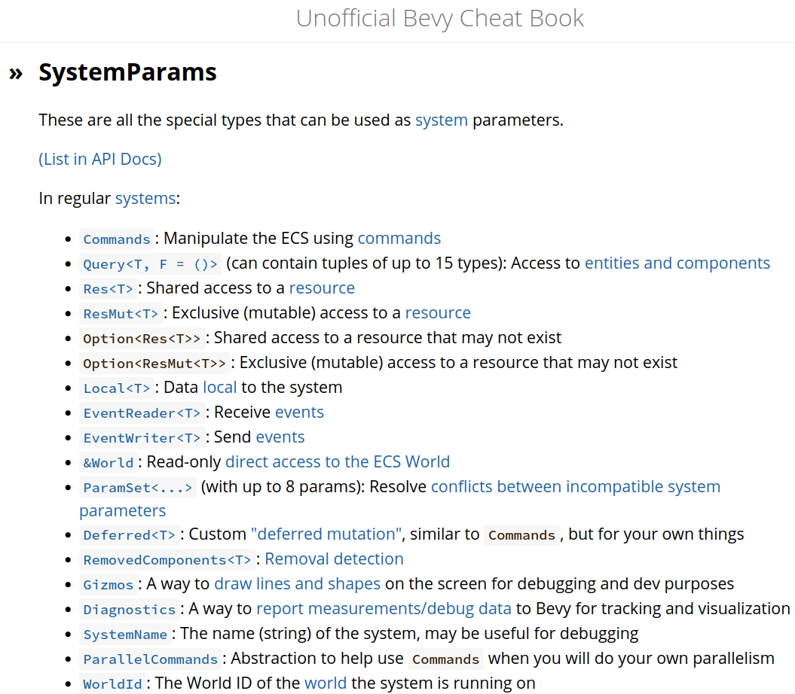

2.8. Move a player¶
This chapter shows how to move a player.

The idea is to give a player a velocity, making the player move on screen.
This chapter introduces:
- how to extend our own Bevy component
- adding an
Updatesystem
2.8.1.  First test: an empty
First test: an empty App has no players¶
Similar to all earlier chapters, we open
our test suite with counting the number
of players in an empty App:
fn test_empty_app_has_no_players() {
let mut app = App::new();
app.update();
assert_eq!(count_n_players(&mut app), 0);
}
2.8.2.  First fix¶
First fix¶
We have done this before, in the add_player chapter.
If you've forgot, look up the implementation there
and come back here.
2.8.3. Second test: our App stores an initial velocity¶
The idea of this app is to give the player a velocity, so that we can see it move.
Here we shorten two TDD tests into one (to save book pages, not because it is good practice):
fn test_can_set_and_get_velocity() {
let velocity = Vec2::new(1.2, 3.4);
let mut app = create_app(velocity);
app.update();
assert_eq!(get_player_velocity(&mut app), velocity);
}
The two tests are:
create_appmust be a function that takes a velocity as an input argumentget_player_velocityreturns the velocity from a game
Note that we pick a Vec2 as the data type to store a velocity.
Bevy uses Vec2 and Vec3 extensively, among other for coordinates,
hence here I extend that practice. This is just a social convention,
so feel free to create your own velocity structure if you feel like it!
Again, shortening the amount of tests is done here to save book pages, not because it is good practice: it forces me to go quicker (and not write about intermediate stubs).
2.8.4. Second fix¶
To fix this, we'll need to:
- write a
PlayerComponentthat can hold a velocity create_appmust accept a velocity and add aPlayercomponent with that velocity to the worldget_player_velocitymust extract the velocity from ourPlayercomponent
Writing a Player Component that can hold a velocity is hard
as extending any Rust structure:
Because the game is 2D, the velocity is also in two dimensions.
Our create_app must accept a velocity and add a Player component
with that velocity to the world:
pub fn create_app(velocity: Vec2) -> App {
let mut app = App::new();
app.add_systems(Startup, move |commands: Commands| {
add_player(commands, velocity);
});
app
}
Similar to earlier chapters, a closure is used to allow the add_player
function with two function arguments to fit in a system that uses only one.
We could have used a local closure too, but the add_player function
feels too long to fit in, as shown below.
Here is the add_player function:
fn add_player(mut commands: Commands, velocity: Vec2) {
commands.spawn((
Sprite {
transform: Transform {
scale: Vec3::new(64.0, 32.0, 0.0),
..default()
},
..default()
},
Player { velocity },
));
}
The add_player function adds a Sprite with a Player component,
as we've done earlier. New is that we now initialize the Player component
too. You may have expected to see velocity: velocity as a syntax,
but, no, this is the proper Rust syntax (and if you disagree,
clippy will remind you) :-) .
The get_player_velocity that extracts the velocity from our Player
component can be implemented in the familiar fashion as shown here:
fn get_player_velocity(app: &mut App) -> Vec2 {
let mut query = app.world_mut().query::<&Player>();
let player = query.single(app.world());
player.velocity
}
We can directly query for a Player component, as we can be sure
other Bevy plugins will not add more Player components: those Bevy
plugins have no idea our Player structure exists, nor do they feel
the need to add one. This is a different from when using a Transform,
which is used by multiple default Bevy plugins.
2.8.5. Third test: our App has a player¶
We've been counting the number of players
since the add_player chapter:
fn test_create_app_has_a_player() {
let velocity = Vec2::new(0.0, 0.0);
let mut app = create_app(velocity);
app.update();
assert_eq!(count_n_players(&mut app), 1);
}
See the add_player chapter for its implementation.
2.8.6. Fourth test: the player starts at the origin¶
Without other information, we expect a player to be created
at the origin (i.e. position (0.0, 0.0)).
And when such a player has no velocity (i.e. a speed of zero
in both dimensions), it's position should remain at the origin.
We use this test as a prelude for the next, where we will
test that the player is actually moving.
With this context added, the test is familiar,
as we've been getting the position of the player
at the add_player_sprite chapter:
fn test_player_starts_at_the_origin() {
let velocity = Vec2::new(0.0, 0.0);
let mut app = create_app(velocity);
app.update();
assert_eq!(get_player_position(&mut app), Vec2::new(0.0, 0.0));
}
See the add_player_sprite chapter for its
implementation.
2.8.7. Fifth test: a player moves¶
Now we have all the pieces in place to test for movement:
fn test_player_moves() {
let velocity = Vec2::new(1.2, 3.4);
let mut app = create_app(velocity);
app.update(); // moves the player
assert_ne!(get_player_position(&mut app), Vec2::new(0.0, 0.0));
}
The test is generous, as it only checks that the player changes position.
Instead, it could have tested that the position of the player would be,
say, at (1.2, 3.4). Such a specific test would be fragile, as adding
forces such as friction and/or gravity would cause the test to break.
The test shown here is enough to force us to add player movement,
hence we'll stick with it. If we need precise movement tests, sure, go
ahead and add these!
2.8.8. Fifth fix¶
Making a player move is a (Bevy) system: it is a -typically-
function that works on entities in the world.
Unlike other earlier systems, moving a player needs to be done
every frame (instead of only at startup).
To specify this, use the Update ScheduleLabel:
The word 'Update' is the name of our second schedule, i.e. it indicates when the system should be run. In our case, the system should be run when updating the screen.
The move_player function 'magically' has a Query as a function
argument:
fn move_player(mut query: Query<(&mut Transform, &Player)>) {
let (mut player_sprite, player) = query.single_mut();
player_sprite.translation.x += player.velocity.x;
player_sprite.translation.y += player.velocity.y;
}
That function argument is the most interesting of the function:
query will contain all Transforms marked with a Player,
where -for the first time!- we can modify the Transform.
These 'magic' function arguments are not magic at all when reading the Bevy documentation. Especially, the Unofficial Bevy Cheat Book (at https://bevy-cheatbook.github.io) nicely document all these 'magic' options:

Part of the Unofficial Bevy Cheat Book 'SystemParams' documentation
These options are available to all Bevy systems. To repeat, a Bevy system
is a function that works on a Bevy World. And move_player indeed
is a Bevy system, that modifies the Player in our Bevy World.
2.8.9. main.rs¶
To see that it works, this is the code we can use:
fn main() {
let velocity = Vec2::new(0.2, 0.1);
let mut app = create_app(velocity);
let add_camera_fn = |mut commands: Commands| {
commands.spawn(Camera2d);
};
app.add_systems(Startup, add_camera_fn);
app.add_plugins(DefaultPlugins);
app.run();
}
This, by now, is quite familiar code, most similar to the 'Add a player sprite' chapter. See that chapter for a refresher.
Running this code, we can indeed see our player move:
2.8.10. Conclusion¶
We can now create an App with one player sprite that moves.
When running the App, we can see the player moves.
We have tested everything that the App does!
Full code can be found at https://github.com/richelbilderbeek/bevy_tdd_book_move_player.